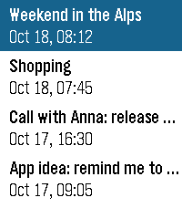
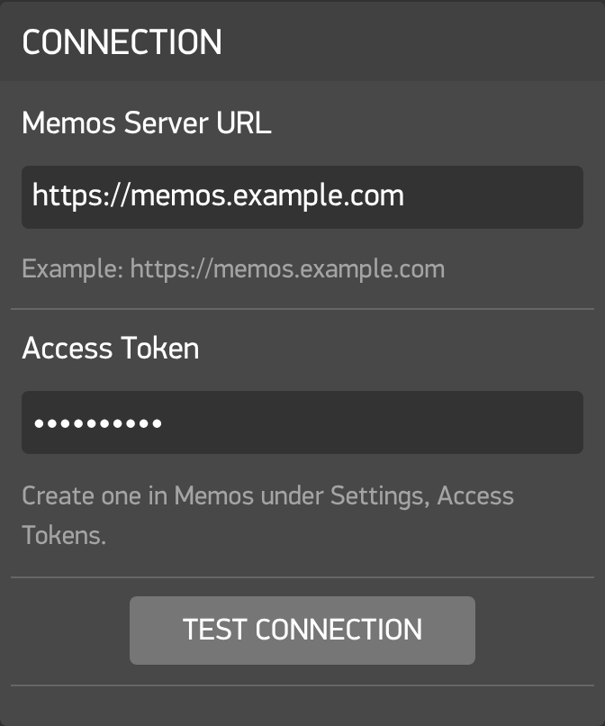
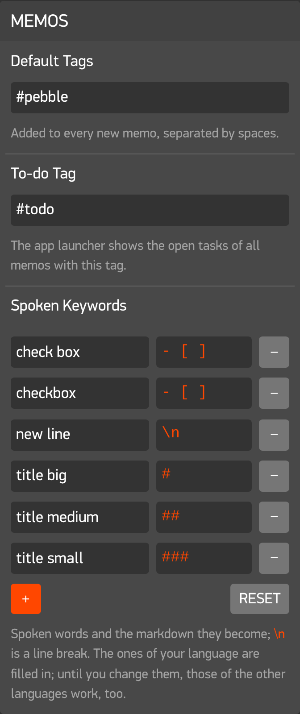
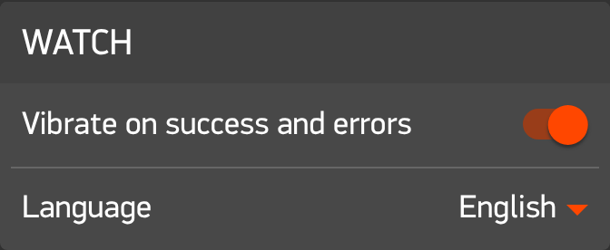

- Dictate a new memo right away, then send, add more or discard.
- Spoken keywords turn into checkboxes, headings, line breaks and tags.
- Drafts stay on the watch (up to three) and work without a phone.
- Offline queue: no internet, no problem, memos go out when you're back.
- Append to a memo or add a comment.
▍a Pebble app for Memos
Ostrakon
Notes scratched onto your wrist. Dictate memos, read them with their markdown, tick off tasks and comment, all on your own self-hosted server.
asking GitHub for the latest release…

pebble
recent · press the buttons, or ↑ ↓
platforms6
languages5
offline drafts3
trackers0
third parties0
licenseMIT
ὄστρακον /ˈos.tra.kon/ n.
A piece of broken pottery that people in antiquity used to write short notes on. Cheap, always at hand, good enough for a shopping list. Athenians scratched names on them to vote someone out of town, which is where ostracism comes from.
This app is the 21st-century version: a shard on your wrist that sends what you say straight to Memos.
# features
Everything you do with Memos in a hurry, without taking out your phone.
- Recent, Pinned and Tags, 20 per page with Load more.
- Search by voice.
- Markdown rendered: headings, tasks, bullets, quotes, code, tags.
- Long memos load page by page as you scroll.
- Cached on phone and watch, so they open without a connection.
- Tasks: tick off checkboxes, saved straight to your server.
- Pin, archive and delete, with confirmation.
- App glance counts the open tasks tagged
#todo. - Touch scrolling on watches with a touchscreen.
- Speaks EN · DE · FR · ES · IT.
# how it works
No cloud in between. Ostrakon talks to exactly one server: yours.
- watch C app dictation · drafts · cache
- phone PebbleKit JS keywords · queue · cache
- your server Memos API memos.example.com
URL and access token are stored on your phone. No tracking, no analytics, no third-party service.
# playground
This is the actual keyword parser from src/pkjs/index.js, running in your browser. Type what you'd say to your watch.
→ markdown sent to Memos
cat keywords.txt
| markdown | en | de | fr | es | it |
|---|---|---|---|---|---|
- [ ] | checkbox | Checkbox | case à cocher | casilla de verificación | casella di controllo |
# | title big | Überschrift groß | grand titre | título grande | titolo grande |
## | title medium | Überschrift mittel | titre moyen | título mediano | titolo medio |
### | title small | Überschrift klein | petit titre | título pequeño | titolo piccolo |
\n | new line | neue Zeile | nouvelle ligne | nueva línea | nuova riga |
#word | hashtag word | Hashtag Wort | hashtag mot | hashtag palabra | hashtag parola |
Keywords are editable in the settings: add your own, like quote → >.
preview, roughly as the watch shows it
# screens
Built for every current Pebble, including the new Core Devices watches.
- basalt Pebble Time / Steel
- chalk Pebble Time Round
- diorite Pebble 2
- emery Pebble Time 2
- flint Pebble 2 Duo
- gabbro Pebble Round 2
# install
-
01
Download
ostrakon.pbwfrom the GitHub releases. -
02
Open it on your phone with the Pebble app, or push it with
pebble install --phone <ip> ostrakon.pbw. -
03
Configure: in the app settings, enter your Memos server URL and an access token from the Memos settings, then hit Test connection.
-
04
Talk. Start New, say “checkbox call mom hashtag family”, send.



# hack on it
Two halves: the watch app in C (src/c) and the phone part in PebbleKit JS (src/pkjs). Pull requests welcome.
$ git clone https://github.com/minils/ostrakon.git $ cd ostrakon $ pebble build $ node test/pkjs.test.js # phone side vs. mock Memos $ node test/i18n.test.js # watch translations $ pebble install --emulator emery
ostrakon/ ├── src/ │ ├── c/ # watch app in C │ └── pkjs/ # phone side, talks to Memos ├── resources/ │ └── lang/ # de · fr · es · it ├── test/ ├── store/ # icon, banner, screenshots └── package.json # uuid 6685e502…